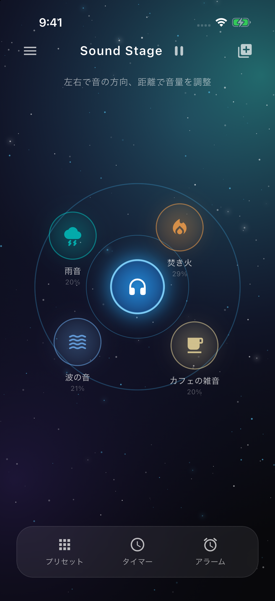
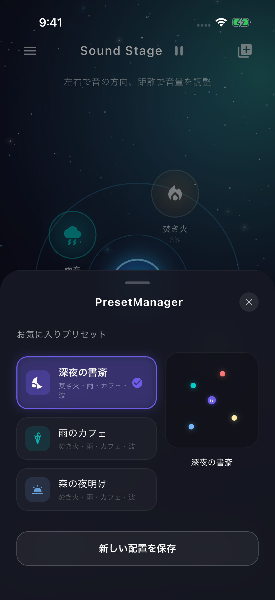

iPhone向け環境音ミキサー · 無料・広告付き
音を置く。
集中をつくる。
左に雨、右に焚き火。カフェのざわめきは、少し遠くへ。音のアイコンを指で動かして、自分に心地よい環境音を作れます。

位置が、そのまま聞こえ方になる。
左右で、音の方向を。
アイコンを左へ動かすと左側へ、右へ動かすと右側へ。イヤホンやヘッドホンで、ステレオパンの変化を楽しめます。
距離で、音量を。
中央のヘッドホンはあなたの位置。音源を中央に近づけると大きく、遠ざけると小さくなります。
4つの環境音を、同時に。
雨・焚き火・カフェ・波をループ再生。勉強、読書、仕事の合間の気分転換に、自分の組み合わせを。
気に入った配置を保存。
3つのプリセットから始めたり、自分で作った配置を保存したり。端末内のMP3・M4A・WAVの追加にも対応しています。
日々の作業に、ちょうどよく。
1〜120分のスリープタイマーと、毎日のアラーム通知を備えています。現在の公開版のスリープタイマーは、アプリを開いている間の利用が前提です。アラーム通知はiPhoneの通知・消音・集中モード設定に従います。

無料で始められます。
公開版は無料・広告付きです。バナー広告は再生停止中に表示します。ログインは不要で、追加した音声や配置は端末内に保存されます。
掲載画像は公開版の実際の画面です。アイコン復元・バックグラウンド操作などの更新は準備中で、公開版の機能としては案内していません。